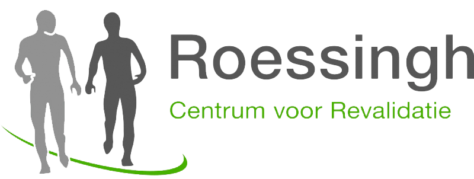
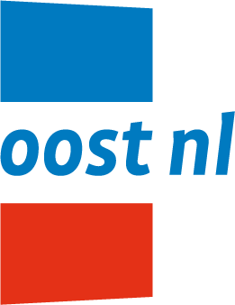
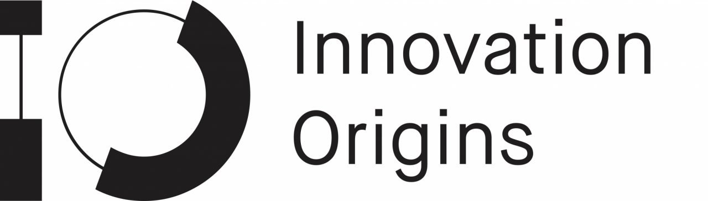
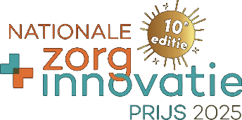

Direct staan en zitten.
Van zitten naar staan in één vloeiende beweging
3 seconden om te staan
3 seconden om te zitten
De eerste mechanische sta-rolstoel ter wereld waarmee je tegelijk kunt staan en bewegen.
In samenwerking met



Eén mechanische rolstoel die een antwoord biedt op de alledaagse problemen van de hele dag zitten. Kom zelfverzekerd van zitten naar staan en beweeg staand voort zonder angst om te vallen.
Mensen kijken vaak langs of over rolstoelgebruikers heen in openbare ruimtes of gespreksgroepen. Praat, doe boodschappen en ontmoet mensen oog in oog in plaats van omhoog te kijken.
Geen woningaanpassingen nodig en lagere kosten. Keukenbladen, kastjes en hoge planken komen weer binnen bereik, zodat u uw huis kunt laten zoals het is.
Werk aan een sta-bureau, praat op ooghoogte met klanten en kies zelf wanneer u staat en wanneer u zit.
Met de EZER sta-rolstoel brengt u een groter deel van de dag rechtop door. Staan haalt u langer uit de zittende houding en verdeelt de druk.

Ontdek hoe staand bewegen werkt. Plan een persoonlijke demo en ervaar staande mobiliteit uit eerste hand.